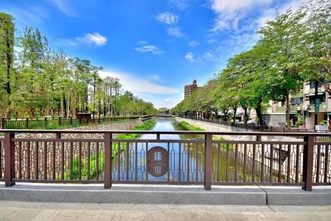

四、綠川水岸景觀步道照片

五、影音報導
透過下方影片認識綠川水岸景觀步道，再比較影片畫面與本文介紹的景點。
若播放器無法播放，請 在 YouTube 觀看綠川水岸介紹影片（另開分頁）。
影片為外部作者發布的歷史介紹，現場狀況請以最新官方資訊為準。
城市走讀 · 歷史記憶 · 水岸漫遊
腳步再急，也能停息。在綠川的舊時光裡，好好呼吸。

透過下方影片認識綠川水岸景觀步道，再比較影片畫面與本文介紹的景點。
若播放器無法播放，請 在 YouTube 觀看綠川水岸介紹影片（另開分頁）。
影片為外部作者發布的歷史介紹，現場狀況請以最新官方資訊為準。